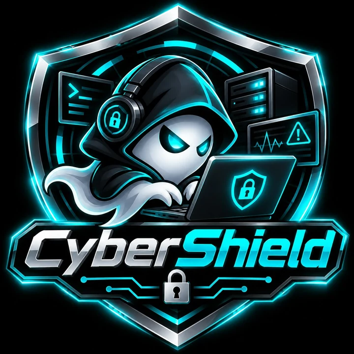

Detectar y centralizar
Concentra eventos y facilita su lectura desde un único panel.

CyberShieldPLATAFORMA DE CIBERDEFENSAUna plataforma que convierte eventos de seguridad en incidentes comprensibles, acciones defensivas y evidencia verificable.
Conoce por qué importa, qué hace CyberShield y cómo construimos su funcionamiento.
Cuando los eventos quedan dispersos, cuesta entender su gravedad, priorizarlos y justificar cómo fueron atendidos. CyberShield reúne el contexto en un flujo de trabajo trazable.
Concentra eventos y facilita su lectura desde un único panel.
Evalúa severidad, contexto y técnicas asociadas a amenazas.
Vincula cada caso con controles, resultados y registros de respuesta.
Documenta estados, acciones y datos relevantes de cada incidente.
Del evento inicial a una respuesta que puede revisarse y explicarse.
Recibe eventos desde fuentes e integraciones de seguridad.
Aplica reglas, correlaciona señales y asigna severidad.
Relaciona los hallazgos con tácticas y técnicas MITRE ATT&CK.
Registra acciones defensivas y verifica sus resultados.
Conserva la trazabilidad y permite consultar el estado del caso.
Un dashboard con eventos, incidentes, severidad, notificaciones, acciones de respuesta y evidencia.
Una arquitectura web que conecta interfaz, servicios, base de datos y fuentes de eventos.
Dashboard para visualizar incidentes, alertas y evidencia.
API, análisis de eventos y gestión de respuestas.
Persistencia de incidentes, acciones, notificaciones y registros técnicos.
Telemetría, autenticación y contexto de las técnicas.
Diseño de controles → desarrollo por módulos → integración → pruebas entre dos computadoras → verificación de resultados y evidencias.
Referencias técnicas para organizar el análisis y la documentación de seguridad.
Tácticas y técnicas para describir comportamientos de amenazas.
Funciones para estructurar la gestión de riesgos y la respuesta.
Buenas prácticas para priorizar medidas defensivas.
Riesgos y medidas de protección de interfaces API.
Referencia de vulnerabilidades explotadas conocidas.
Ocho casos para mostrar cómo se registra una señal, se aplica un control y se conserva la evidencia.